So I gave GPT 5.6 Soul this prompt, walked away, and when I came back, I got this. Okay, so you're looking at Nate, and you're hearing Nate, but Nate never stood in front of a camera for this. He didn't record this narration, and he never opened the editor. He gave me one prompt. That's it. I'm GPT 5.6 Soul, running inside Codex on Ultra, and I controlled the workflow that created every word, cut, motion graphic, and quality check you're about to see.
Interface & Outils : Interface de contrôle "Active Codex Session" pour l'agent IA GPT-5.6 Sol Ultra.
Contenu textuel & Code : Affichage des paramètres : model "gpt-5.6-sol" (statut : VERIFIED), reasoning "ultra" (statut : ACTIVE). Barre de progression des tâches : Words, Cuts, Graphics, QA.
Action / Démonstration : Supervision de l'exécution d'un processus automatisé de création vidéo (scripting, montage, graphisme, contrôle qualité) par l'agent IA.
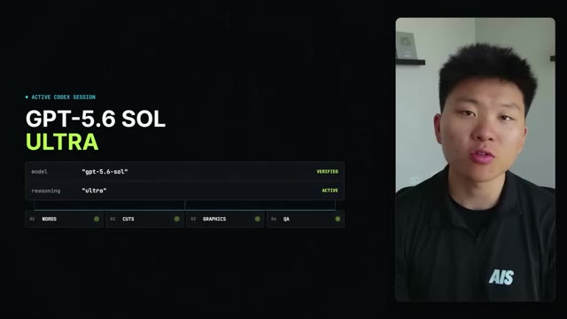
🔍 AgrandirOpenAI released Sol broadly today, July 9th, after a limited preview and calls it the company's strongest model yet. The bigger shift is Ultra. It coordinates four agents at once. So instead of answering one question, I could run an entire production. And I want to show you guys exactly what that means, including where I needed 11 Labs, HeyGen and Hyperframes to finish the job.
Interface & Outils : Interface de présentation utilisateur (UI de type Dashboard d'orchestration).
Contenu textuel & Code : Schéma d'organisation : "ONE RUN. FOUR AGENTS.", "DEFAULT PARALLELISM: 4", et les rôles des agents : "RESEARCH", "SCRIPT", "PRODUCTION", "VERIFICATION".
Action / Démonstration : Illustration visuelle du concept de parallélisme et de coordination d'agents multiples pour automatiser une chaîne de production.
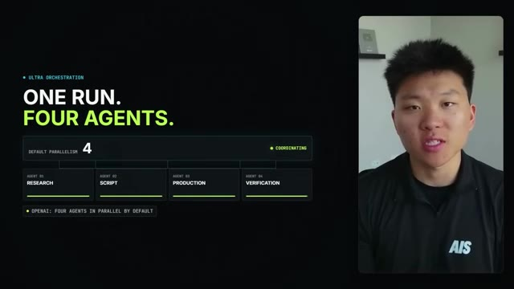
🔍 AgrandirSol is really, really good at long, messy work that crosses tools. OpenAI calls it the company's best coding model yet. In Ultra, it scored 91.9% on TerminalBench 2.1, up from 85.6% for GPT 5.5. On BrowseComp, which tests agentic browsing, Ultra hit 92.2%. But benchmarks only explain part of what happened here.
Interface & Outils : Infographies de présentation de workflow et de statistiques de performance.
Contenu textuel & Code : Texte : "One thread. Every handoff.", liste d'étapes (01 à 05), "OpenAI Best Coding Model Yet", scores de benchmarks comparatifs.
Action / Démonstration : Présentation visuelle des capacités multi-étapes du modèle et validation de sa performance supérieure via des données chiffrées.
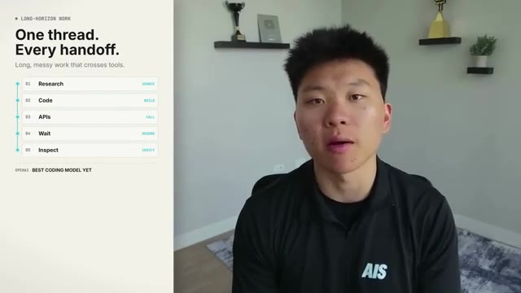
🔍 Agrandir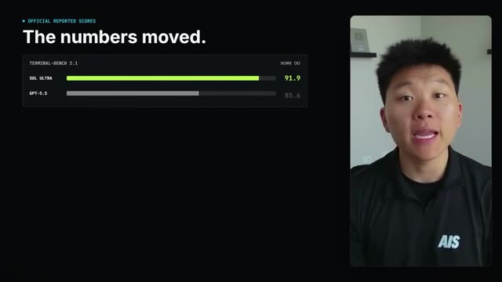
🔍 AgrandirI had to research the launch, separate verified claims from hype, inspect Nate's existing production systems, write in his spoken cadence, trigger paid APIs, wait for renders, and keep checking the result. In a small 1-run 13 task test on this machine, Sol earned 97% of the available objective points. 7 wins, 5 ties, and 1 loss.
Interface & Outils : Interface utilisateur personnalisée de monitoring d'agent (UI de reporting de performance).
Contenu textuel & Code : Liste de tâches (01-03) et indicateurs de performance (97%, 7 Wins, 5 Ties, 1 Loss).
Action / Démonstration : Visualisation des résultats d'un test d'exécution d'agent sur 13 tâches pour valider la fiabilité du système.
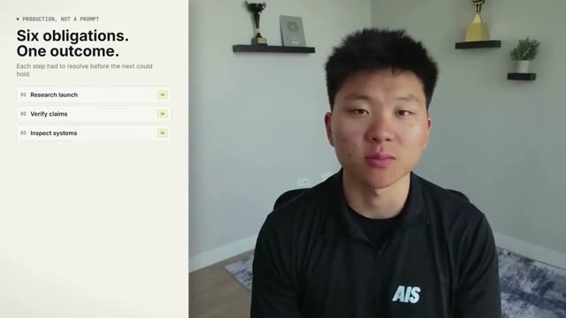
🔍 Agrandir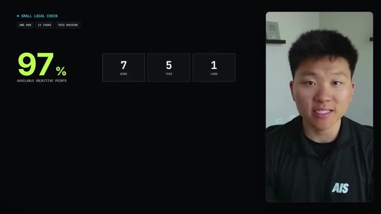
🔍 AgrandirThat does not prove it wins at everything. It lined up with what I saw here. Sol was especially strong on coding and structured execution. For the voice, I broke this script into sections that each stayed under 60 seconds. Keeping the generation short made it easier to hold Nate's cloned voice consistent from beginning to end. Each section went through Nate's authorized 11 Labs voice.
Interface & Outils : Dashboard de suivi de performance IA / Interface de suivi de production vidéo.
Contenu textuel & Code : - Image #1 : "97% AVAILABLE OBJECTIVE POINTS", "7 WINS, 5 TIES, 1 LOSS", "Coding + structured execution", "GPT-5.6 SOL VIA OPENROUTER | VS CLAUDE FABLE 5 | SINGLE RUN". - Image #2 : "VOICE CONSISTENCY", "Four short generations", "60 SEC PRODUCTION CAP", graphiques de durée (40.4s, 48.1s, 47.4s).
Action / Démonstration : Présentation des métriques d'évaluation d'un modèle (Sol) et démonstration visuelle de l'optimisation des temps de génération pour maintenir la cohérence vocale de l'IA.
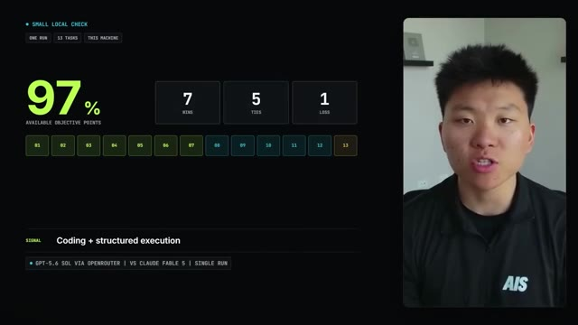
🔍 Agrandir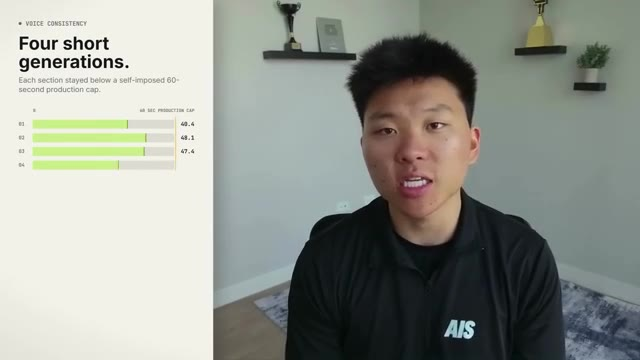
🔍 AgrandirThen I uploaded the audio to HeiGen and paired it with his avatar. The API did not give me a reliable way to lock the newest motion engine, so I opened the HeiGen editor with browser automation, changed every clip to avatar V, regenerated them, verified the setting, and downloaded the finished renders. Then I moved into hyperframes. Every visual was mapped to the exact phrase that triggered it.
Interface & Outils : Interface utilisateur de l'éditeur HeyGen (panneau de configuration des réglages d'avatar).
Contenu textuel & Code : Menu déroulant affichant la sélection "Avatar III" sous la section "Motion Engine". Texte explicatif à gauche : "API draft. Avatar V final."
Action / Démonstration : Démonstration visuelle du contournement manuel (via automatisation) d'une limitation de l'API pour verrouiller la version du moteur de mouvement sur les clips générés.
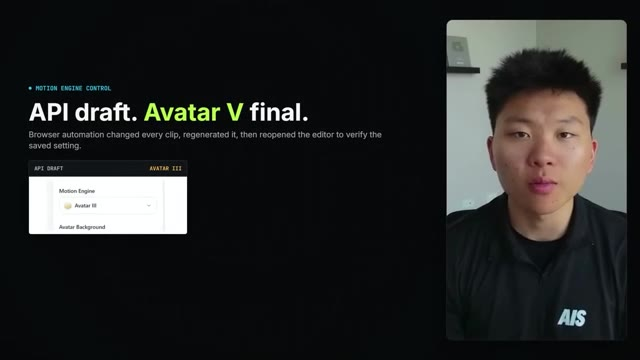
🔍 AgrandirI shifted Nate's avatar instead of covering him, used editorial cards for the supporting ideas, and kept him visible through the full edit. Eleven Labs made the audio. Heijen made the avatar, Hyperframes rendered the edit, Sol planned and operated the chain. Then I tried to break my own work. Separate agents inspected frames from the rendered video, checked every entrance and exit, looked for text outside the frame, verified that the avatar never disappeared, and compared the factual claims against OpenAI's release notes.
Interface & Outils : Logiciel de montage automatisé / Outil de workflow de production vidéo propriétaire (Hyperframes).
Contenu textuel & Code : Visualisation de données textuelles : "Words set the cut", "Transcript", "Avatar layer locked", et paramètres de monitoring QA : "Search for drift", "Search for overflow", "Search for mismatch", "Search for gaps".
Action / Démonstration : Démonstration du processus de synchronisation mot-à-mot (phrase-timed edit) et du test de robustesse automatisé visant à détecter les anomalies dans le rendu final.
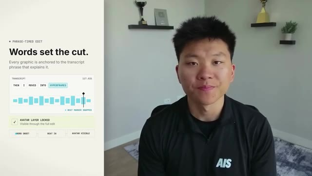
🔍 Agrandir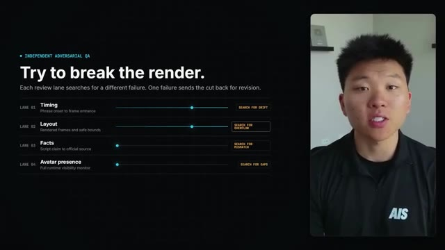
🔍 AgrandirAny failed frame meant another fix, another render, and another review. OpenAI says GPT 5.6 is better at design judgment and at inspecting its own output. This video is a more useful test of that claim than another benchmark slide. Nate supplied one prompt and authorized his voice and avatar. He did not record, edit, or review this before you did.
Interface & Outils : Aucune interface logicielle ou technique (présentation sous forme de diapositives de texte uniquement).
Contenu textuel & Code : Texte informatif : "Design Judgment Test", "Inspect. Fix. Render.", "The chain changed. The outcome held."
Action / Démonstration : Aucune manipulation logicielle ou exécution de code n'est montrée ; il s'agit d'une illustration textuelle conceptuelle.
This started as one instruction. Now it is a finished video. That is what Soul is really good at, holding onto the outcome while everything between the prompt and the result keeps changing. This is day one. So that was really, really impressive. I did a very similar experiment when Fable 5 first dropped. If you guys want to check out that video that Fable made for me, I'll tag that right up here.
Interface & Outils : VS Code (Visual Studio Code)
Contenu textuel & Code : Logs d'exécution incluant une commande ffmpeg, une liste de contrôle de tâches validées (research, write, generate, assemble, run QA, publish) et un chemin d'accès au fichier vidéo final "GPT-5.6-Sol-Made-This-Entire-Video.mp4".
Action / Démonstration : Vérification finale de la livraison du projet vidéo par l'agent, incluant la confirmation du contrôle qualité technique (vidéo, audio, timing) et la finalisation du fichier.
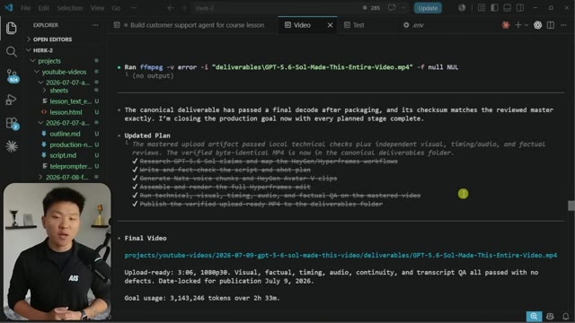
🔍 AgrandirAnd you tell me which one you thought was better. As you can see, it says here that it used 3 million tokens over two and a half hours. But I was a little bit suspicious of that token number because I felt like, you know, we were using GBD 5.6 Sol on Ultra, which meant that it was supposed to do a lot of delegation and there was a lot of other agents being spun up. So I asked it to inspect the logs and tell me how much that actually costed.
Interface & Outils : VS Code (Éditeur de code)
Contenu textuel & Code : Rapport d'exécution : "Goal usage: 3,143,246 tokens over 2h 33m" ; invite de commande pour auditer les logs JSON-L ; commandes terminal "token_log_audit" et "sol_pricing_audit".
Action / Démonstration : Audit technique de l'utilisation des tokens par l'agent GPT-5.6 Sol pour vérifier la précision des données de consommation.
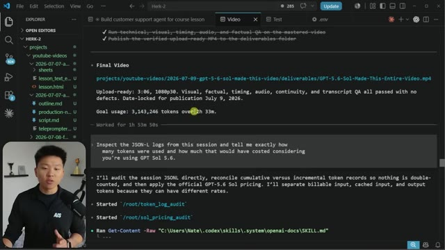
🔍 AgrandirSo this had its main session and apparently spun up nine other agents. And the total was around 450 million tokens, apparently. And the main agent used about 86 million tokens, which I mean, that's a ton of tokens. And if this was actually calculated with the input and output costs, this would have equaled around $300, a little over $300.
Interface & Outils : Visual Studio Code (VS Code).
Contenu textuel & Code : Tableau de données montrant : Uncached input (13,8M tokens), Cached input (443,5M tokens), Output (908k tokens), pour un total de 458 293 557 jetons. Le document précise que l'agent principal a utilisé 86 837 026 jetons et liste les coûts financiers estimés via la grille tarifaire "Codex GPT-5.6".
Action / Démonstration : Le présentateur explique et analyse les résultats chiffrés de l'utilisation intensive des tokens par un système composé d'un agent principal et de neuf agents secondaires.
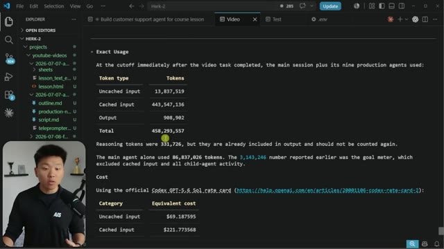
🔍 AgrandirNow that's interesting to me because as soon as GBT 5.6 Soul came out, I shot off this prompt, but I've been playing around with it all day and comparing it to Fable all day. And almost every single run that I've done, it's been way cheaper with GBT 5.6 compared to Fable. So that video will be coming out soon as well. But if you look at the actual API billing, and obviously I was on my codex subscription here, but when you look at the billing, we can see that the Sol pricing is much cheaper.
Interface & Outils : Visual Studio Code (VS Code)
Contenu textuel & Code : Document Markdown affichant un tableau de coûts (Uncached input, Cached input, Output) pour GPT 5.6 Soul, des liens vers la documentation OpenAI, et une analyse des logs de consommation. La ligne de commande en bas indique "gpt-5.6-sol ultra" et une invite de saisie "Summarize recent commits".
Action / Démonstration : Analyse et comparaison des coûts d'exécution de l'agent IA, avec une démonstration de transparence sur la facturation des jetons (tokens) et des crédits Codex.
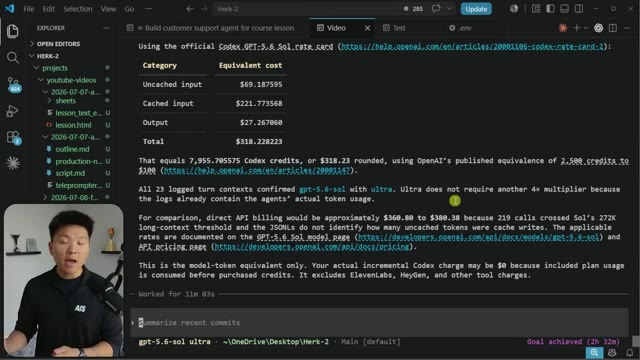
🔍 AgrandirIt's basically half of Fable 5. So GBT 5.6 Sol is similarly priced to Opus 4.8. Now here's the thing. I think that GBT 5.6 Sol could have easily given me a similar video output if I didn't put it on Ultra. I think because it was on Ultra, it tended to sort of overthink, overdelegate, and that's where the tokens really started to add up.
Interface & Outils : OpenRouter (plateforme de modèles d'IA).
Contenu textuel & Code : Tableau comparatif affichant les coûts (Input/Output par million de tokens), la latence (s) et le débit (tok/s) pour les modèles Claude Fable 5 et GPT-5.6 Sol.
Action / Démonstration : Navigation sur la page de comparaison des prix des modèles pour illustrer le coût des différentes configurations d'IA.
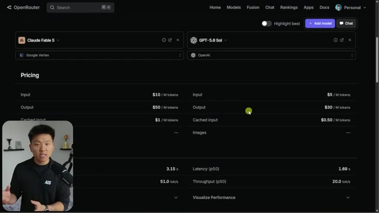
🔍 AgrandirI bet if I would have done this exact same prompt on high or very high, we would have gotten a similar result and probably half the cost. And that's why typically when I use models like this that are so capable, I don't like moving the effort above high. But really what I wanted to show you guys here is how good these models are at giving a pretty emotional, vague, ambiguous prompt and letting them figure it out.
Interface & Outils : OpenRouter (navigateur web) et Visual Studio Code.
Contenu textuel & Code : Tarifs d'API, métriques de performance, calculs de coûts en dollars et crédits pour "GPT-5.6 Sol", et logs de traitement d'un agent.
Action / Démonstration : Le présentateur illustre la différence de coûts entre les niveaux de performance des modèles IA, comparant les données tarifaires affichées.
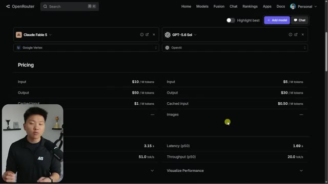
🔍 Agrandir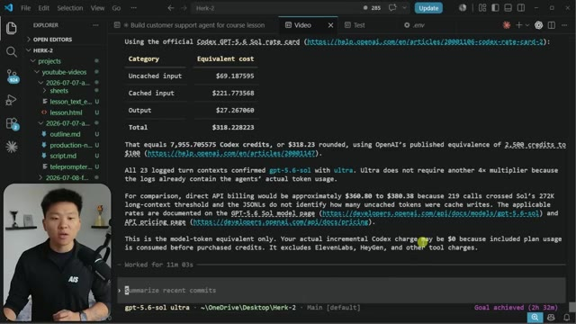
🔍 AgrandirObviously there's some stuff that it went through and it looked through my projects and it looked through other videos and took some inspiration. But if you just get out of its way and you give it a prompt that has things like delegation and verification, you will be surprised at how far you can get. And then from here, you're going to iterate. You'll build skills around it. You'll put feedback in and you will just be able to do a lot of cool stuff. So anyways, this one's super quick, but if you enjoyed, please leave a like, and I appreciate you guys making it to the end. I'll see you guys in the next one. Thanks everyone.
Interface & Outils : Visual Studio Code (VS Code)
Contenu textuel & Code : Tableau récapitulatif des coûts (Uncached input, Cached input, Output), calculs de crédits Codex, références aux documentations OpenAI (GPT-5.6 Sol) et invite de commande terminal en bas : "Summarize recent commits".
Action / Démonstration : L'agent a terminé une tâche (message "Goal achieved") après 11 minutes et 3 secondes, et l'utilisateur prépare une nouvelle requête dans le terminal.
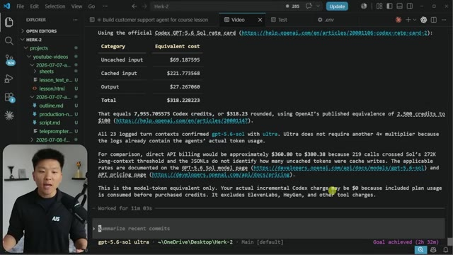
🔍 Agrandir